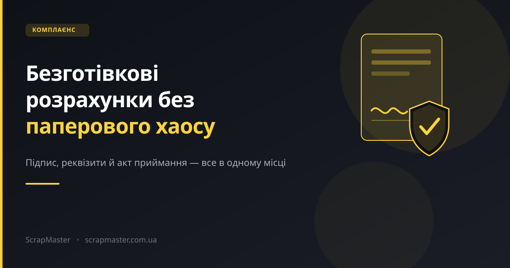
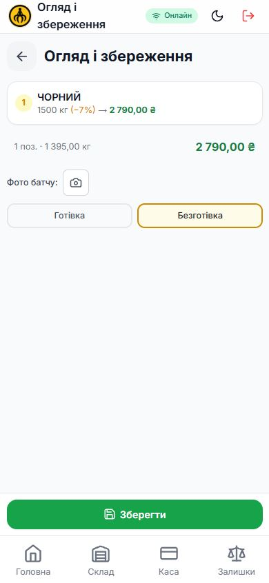
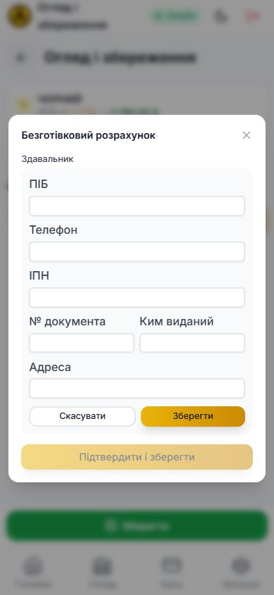
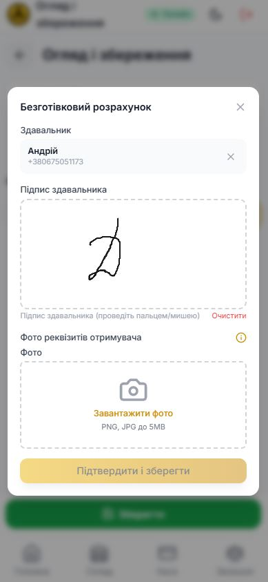
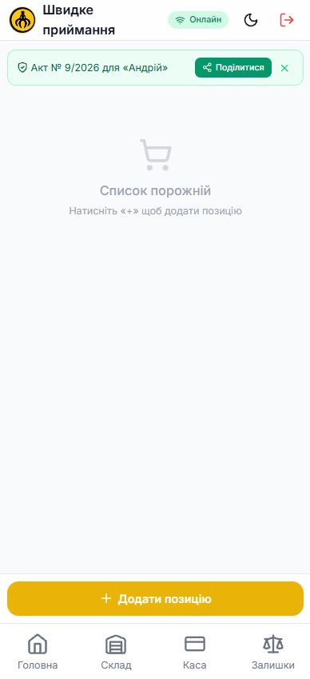
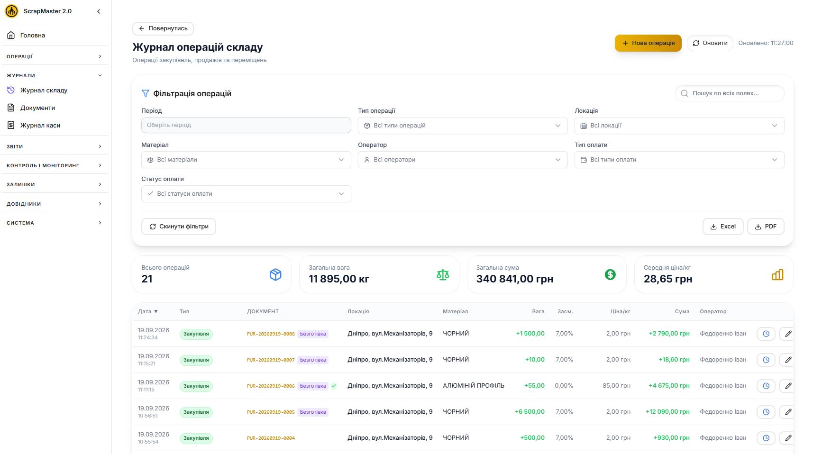
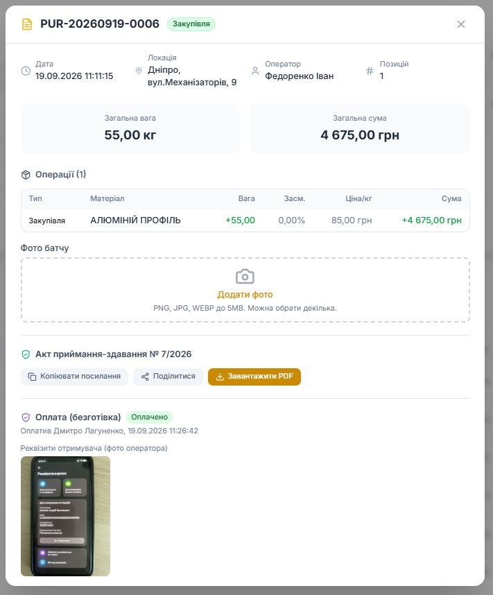
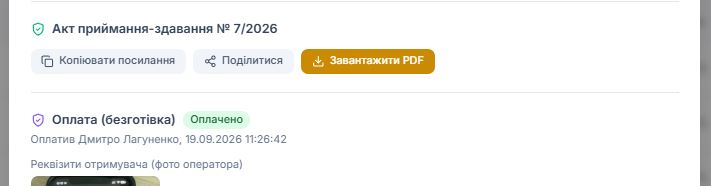
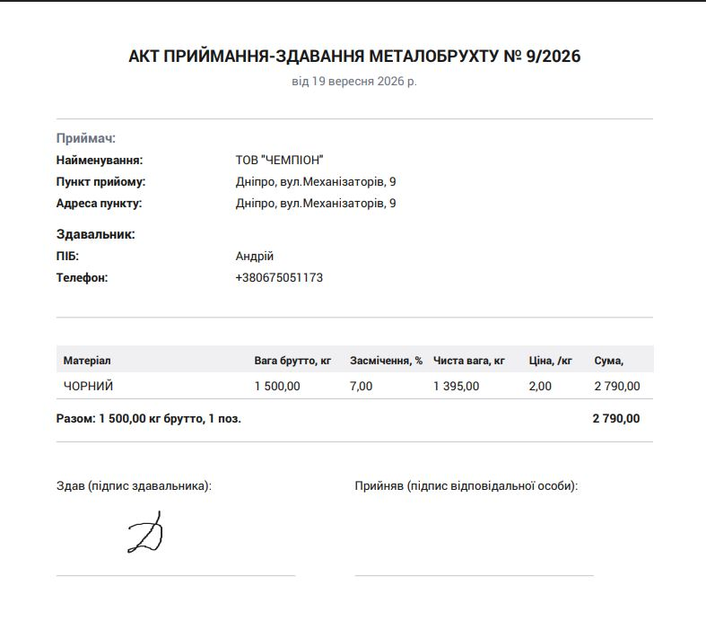

Здавальник, підпис, реквізити отримувача й акт приймання-здавання — усе в одному місці, від оператора на приймальні до офісу.

Готівкові розрахунки прості: заплатили — видали, все на виду. А що робити, коли ви розраховуєтесь зі здавальником переказом на картку? Хто цей здавальник? Куди пішли гроші? Чи підтвердив хтось, що оплата дійсно відбулась? Без чіткого процесу це перетворюється на хаос із паперовими розписками, скріншотами переказів у месенджерах і питаннями «а хто це схвалив?» через місяць після операції.
Модуль «Комплаєнс» у ScrapMaster вирішує саме це — перетворює безготівкову операцію приймання на прозорий, задокументований процес: від першого контакту зі здавальником до підтвердження оплати офісом.
Коли пункт прийому працює з безготівковими розрахунками, кожна така операція:
Жодних розпорошених чатів, паперових бланків чи «пам'ятаю, що заплатили».
Оператор приймає метал так само, як завжди — через покроковий wizard на телефоні чи планшеті. Різниця з'являється на екрані підсумку операції.
1Вибір способу оплати. На екрані «Огляд і збереження» оператор просто перемикає операцію на «Безготівка» замість «Готівка».

Перемикач способу оплати2Дані здавальника. З'являється форма: ПІБ, телефон, ІПН здавальника, за потреби — номер документа й адреса. Здавальник просто називає дані, оператор вводить за кілька секунд.

Дані здавальника3Підпис і реквізити. Здавальник підписується пальцем прямо на екрані — підтверджує, що дані вказано вірно. Тут-таки оператор фотографує банківські реквізити отримувача: система навіть підкаже, де їх взяти — попросити клієнта відкрити застосунок свого банку і сфотографувати екран з реквізитами чи QR-кодом.

Підпис + фото реквізитів4Готово. Операція збережена, автоматично сформований акт приймання-здавання з унікальним номером. PDF нікуди «не летить» одразу на пристрій оператора — він спокійно чекає в системі, доступний з офісу в будь-який момент.

Акт № 9/2026 сформованоТепер найважливіше — усе, що оператор щойно зробив, миттєво стає видимим в офісі.
У загальному журналі операцій безготівкові партії позначені окремим бейджем «Безготівка». Поки оплата не підтверджена — це видно одразу; щойно офіс підтвердить переказ — з'являється зелена галочка з підказкою, хто і коли це зробив. Фільтри дозволяють миттєво відібрати операції за типом і статусом оплати.

Журнал операцій складу — фільтри по типу й статусу оплатиВідкривши будь-яку безготівкову операцію, офіс бачить повну картину: здавальника, акт приймання-здавання з посиланням і PDF, статус оплати та фото реквізитів отримувача — окремо від звичайних фото прийнятого металу, бо це різні речі.

Акт, статус оплати й реквізити — в одній картці
Видно, хто і коли підтвердив оплатуКожна безготівкова операція має власний офіційно оформлений документ — з реквізитами пункту прийому, даними здавальника, переліком матеріалу і підписом. Його можна відкрити, поділитися посиланням або завантажити як PDF у будь-який момент — навіть через кілька місяців після операції.

Акт приймання-здавання № 9/2026Комплаєнс — це не бюрократія заради бюрократії. Це коли будь-яку операцію за секунди можна пояснити: хто, кому, скільки і на підставі чого.
Приведіть безготівкові розрахунки в порядок — здавальник, підпис, реквізити й акт приймання-здавання в одній системі.
Запросити демо